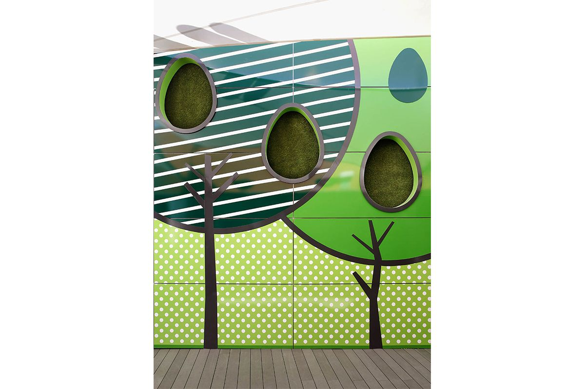
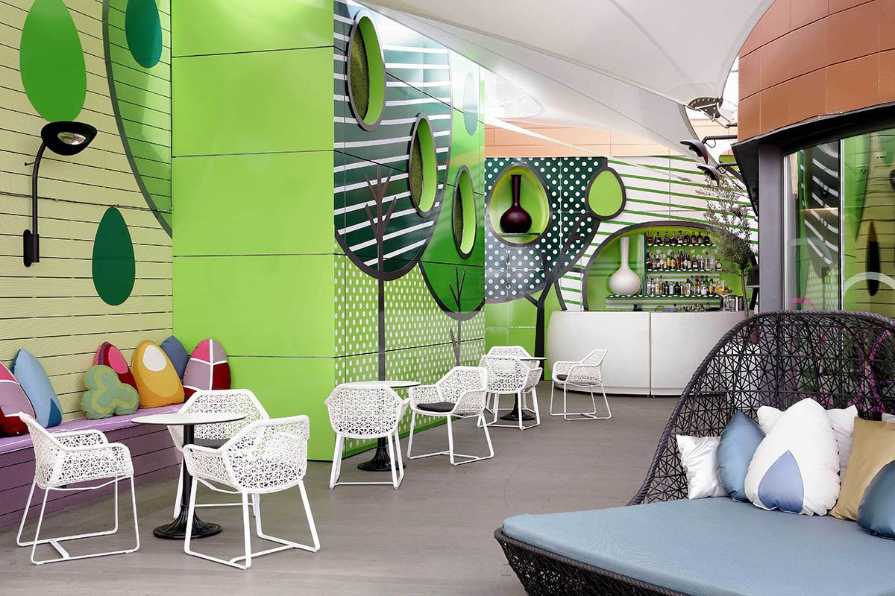

|
2015 |
Terraza & Restaurante Hotel IndigoEl principal atractivo del desafío planteado por el Hotel Indigo, era el de crear un espacio natural en pleno corazón de Madrid. Al tratarse de un hotel tan urbano, el objetivo era dar una nota de color a las zonas de recreación del hotel, culminado en un mini universo acuático y botánico. Con unas inmejorables vistas de la puesta de sol de Madrid, sin duda este era el mejor marco para crear en la terraza un ambiente alegre y divertido, donde la des-conexión de la ciudad fuera total. Esto se consiguió a través de la creación de focos visuales por todo el espacio y un diseño utópico y con alma pop, donde el auténtico protagonista es un particular jardín vertical hecho con vinilos. El restaurante se encuentra en la planta inferior al que se accede por una escalera de caracol, tiene un aspecto mucho más acogedor e íntimo que la terraza. Al tratarse de un espacio que podría ser utilizado todos los días del año, se busco crear un lugar confortable y abierto al skyline de Madrid a través de su infinitypool. La inspiración marina es claramente reconocible a través de los colores predominantes, el azul y el verde. También resulta fundamental hablar de los materiales y texturas elegidos: madera, terciopelo, espejo, metal y vinilos, que aportan sofisticación y convierten el mobiliario en auténticas piezas-joya. La disposición de una decoración refinada funciona a la hora de crear un entorno distinguido e íntimo. Como guiño a la situación del hotel en la ciudad, en el techo del restaurante se encuentra un mapa a escala de la madrileña Gran Vía construida en espejo y con referencias a las principales calles del vecindario. |

 |